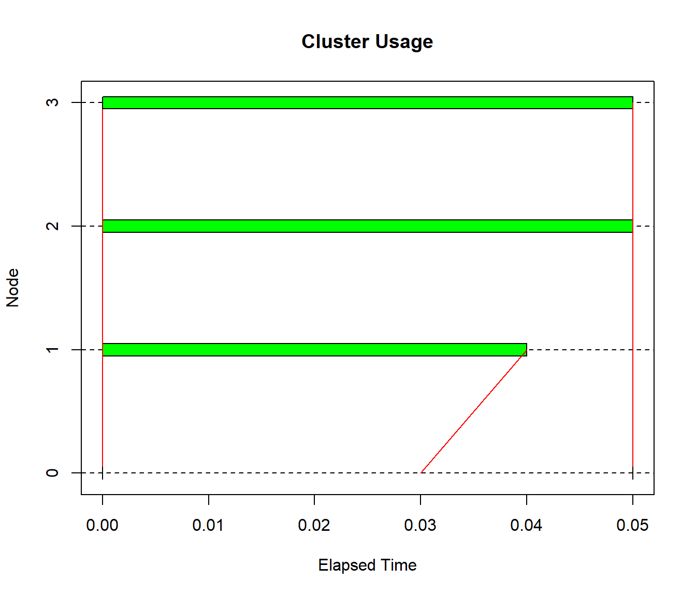

E.3 Ejemplos
Si se emplea el paquete parallel en sistemas tipo Unix (Linux, Mac OS X, …), se podría
evaluar en paralelo una función llamando directamente a mclapply().
Por defecto empleará todos los núcleos disponibles, pero se puede especificar un número menor
mediante el argumento mc.cores.
## [1] 8func <- function(k) {
i_boot <- sample(nrow(iris), replace = TRUE)
lm(Petal.Width ~ Petal.Length, data = iris[i_boot, ])$coefficients
}
RNGkind("L'Ecuyer-CMRG") # Establecemos Pierre L'Ecuyer's RngStreams...
set.seed(1)
system.time(res.boot <- mclapply(1:100, func)) # En Windows llama a lapply() (mc.cores = 1)## user system elapsed
## 0.06 0.00 0.07En Windows habría que crear previamente un cluster, llamar a una de las funciones
par*apply() y finalizar el cluster:
cl <- makeCluster(ncores - 1, type = "PSOCK")
clusterSetRNGStream(cl, 1) # Establecemos Pierre L'Ecuyer's RngStreams con semilla 1...
system.time(res.boot <- parSapply(cl, 1:100, func))## user system elapsed
## 0.02 0.00 0.04## num [1:2, 1:100] -0.415 0.429 -0.363 0.42 -0.342 ...
## - attr(*, "dimnames")=List of 2
## ..$ : chr [1:2] "(Intercept)" "Petal.Length"
## ..$ : NULLEsto también se puede realizar en Linux (type = "FORK"),
aunque podríamos estar trabajando ya en un cluster de equipos…
También podríamos emplear balance de carga si el tiempo de computación es variable
(e.g. parLapplyLB() o clusterApplyLB()) pero no sería recomendable si se emplean
números pseudo-aleatorios (los resultados no serían reproducibles).
Además, empleando las herramientas del paquete snow se puede representar el uso
del cluster (experimental en Windows):
## elapsed send receive node 1 node 2 node 3 node 4 node 5 node 6 node 7
## 0.03 0.00 0.01 0.02 0.01 0.02 0.02 0.01 0.01 0.02
Hay que tener en cuenta la sobrecarga adicional debida a la comunicación entre nodos al paralelizar (especialmente con el enfoque de socket).
E.3.1 Procesamiento en paralelo con la función boot()
La función boot::boot() incluye parámetros para el procesamiento en paralelo:
parallel = c("no", "multicore", "snow"), ncpus, cl.
Si parallel = "snow" se crea un clúster en la máquina local durante la ejecución,
salvo que se establezca con el parámetro cl.
Veamos un ejemplo empleando una muestra simulada:
n <- 100
rate <- 0.01
mu <- 1/rate
muestra <- rexp(n, rate = rate)
media <- mean(muestra)
desv <- sd(muestra)
library(boot)
statistic <- function(data, i){
remuestra <- data[i]
c(mean(remuestra), var(remuestra)/length(remuestra))
}
B <- 2000
set.seed(1)
system.time(res.boot <- boot(muestra, statistic, R = B))## user system elapsed
## 0.08 0.00 0.08# system.time(res.boot <- boot(muestra, statistic, R = B, parallel = "snow"))
system.time(res.boot <- boot(muestra, statistic, R = B, parallel = "snow", cl = cl))## user system elapsed
## 0.06 0.00 0.06E.3.2 Estudio de simulación
Si se trata de un estudio más complejo, como por ejemplo un estudio de simulación en el que se emplea bootstrap, la recomendación sería tratar de paralelizar en el nivel superior para minimizar la sobrecarga debida a la comunicación entre nodos.
Por ejemplo, a continuación se realiza un estudio similar al Ejemplo 5.3
pero comparando las probabilidades de cobertura y las longitudes de los
intervalos de confianza implementados en la función boot.ci().
t.ini <- proc.time()
nsim <- 500
getSimulation <- function(isim, B = 2000, n = 30, alfa = 0.1, mu = 100) {
rate <- 1/mu # 0.01
resnames <- c("Cobertura", "Longitud")
# intervals <- c("Normal", "Percentil", "Percentil-t", "Percentil-t simetrizado")
intervals <- c("Normal", "Basic", "Studentized", "Percentil", "BCa")
names(intervals) <- c("normal","basic", "student", "percent", "bca")
intervals <- intervals[1:4]
resultados <- array(dim = c(length(resnames), length(intervals)))
dimnames(resultados) <- list(resnames, intervals)
# for (isim in 1:nsim) { # isim <- 1
muestra <- rexp(n, rate = 0.01)
media <- mean(muestra)
desv <- sd(muestra)
# boot()
library(boot)
statistic <- function(data, i){
remuestra <- data[i]
c(mean(remuestra), var(remuestra)/length(remuestra))
}
res.boot <- boot(muestra, statistic, R = B)
res <- boot.ci(res.boot, conf = 1 - alfa)
# Intervalos
res <- sapply(res[names(intervals)], function(x) {
l <- length(x)
x[c(l-1, l)]
})
# resultados
resultados[1, ] <- apply(res, 2,
function(ic) (ic[1] < mu) && (mu < ic[2])) # Cobertura
resultados[2, ] <- apply(res, 2, diff) # Longitud
resultados
}
clusterSetRNGStream(cl)
result <- parLapply(cl, 1:nsim, getSimulation)
# stopCluster(cl)
# result
t.fin <- proc.time() - t.ini
print(t.fin)## user system elapsed
## 0.00 0.01 8.70resnames <- c("Cobertura", "Longitud")
intervals <- c("Normal", "Basic", "Studentized", "Percentil", "BCa")
names(intervals) <- c("normal","basic", "student", "percent", "bca")
intervals <- intervals[1:4]
resultados <- sapply(result, function(x) x)
dim(resultados) <- c(length(resnames), length(intervals), nsim)
dimnames(resultados) <- list(resnames, intervals, NULL)
res <- t(apply(resultados, c(1, 2), mean))
res## Cobertura Longitud
## Normal 0.866 57.05639
## Basic 0.860 56.97389
## Studentized 0.900 65.72609
## Percentil 0.868 56.97389| Cobertura | Longitud | |
|---|---|---|
| Normal | 0.866 | 57.056 |
| Basic | 0.860 | 56.974 |
| Studentized | 0.900 | 65.726 |
| Percentil | 0.868 | 56.974 |
El último paso es finalizar el cluster: